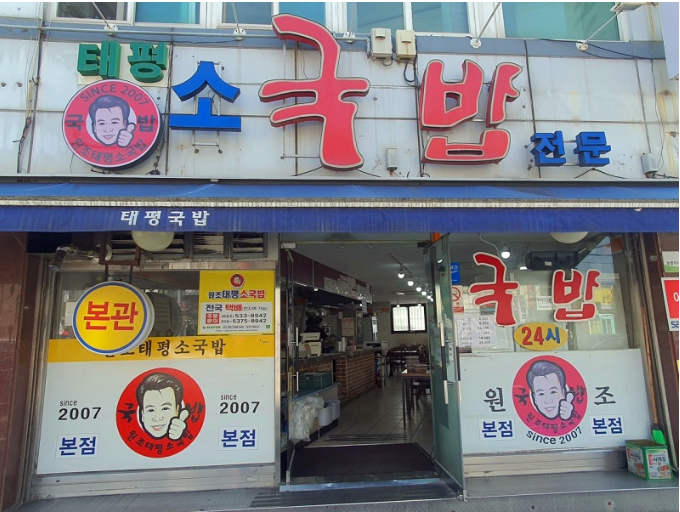
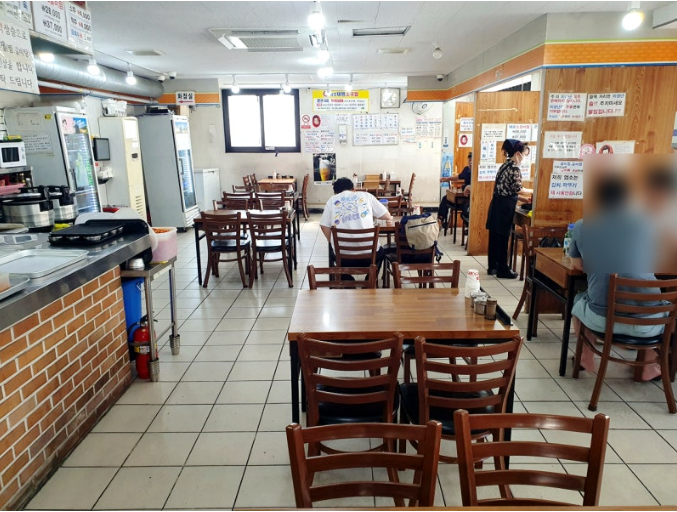
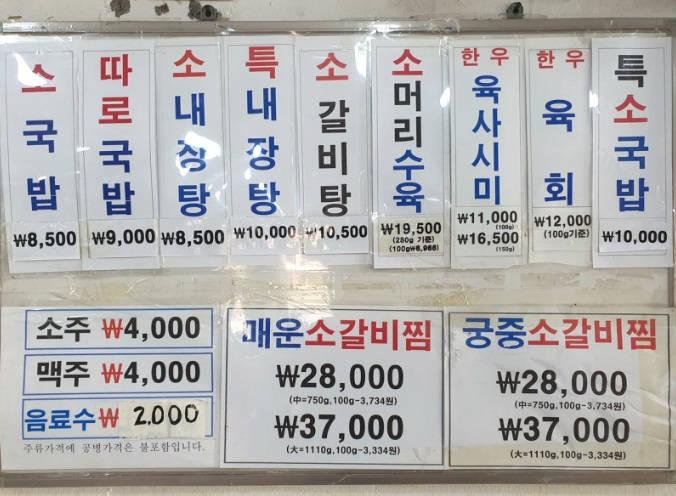
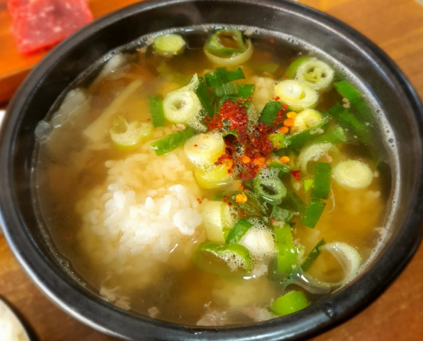
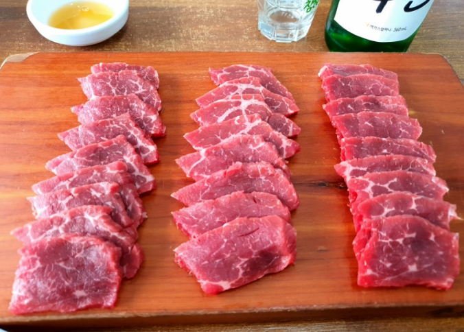

[대전 유성구 맛집]태평소국밥 리뷰
- 위치
- 외부/내부
- 외부

- 원조 본점이라 그런지 외부는 조금 허름하다.
- 내부

- 내부도 클래식한 의자와 식탁으로 옛날부터 이어져온 식당 느낌이 물씬 난다.
- 메뉴

- 국밥은 8천원에서 만원정도로 구성되어 있으며 대표메뉴는 소국밥과 육사시미라고 한다.
그래서 우리는 소국밥과 육사시미를 시켜보았다.
- 소국밥

- 소국밥은 국밥이라기보다 소고기무국에 가까운 맛이었다.
간이 잘 맞고 고기의 맛이 국물과 어우러져 맛이 깊다.
- 육사시미

- 육사시미는 빛깔도 맛도 매우 좋았다.
이 한판에 가격이 16500원이라는게 말이 안된다고 생각한다.
- 3줄 요약
- 태평동에 있는게 본점,주차장,매장 넓음
- 음식 퀄리티 대비 상당히 저렴한 가격대 그 중에서도 육사시미는 반드시 먹어야할 메뉴
- 소국밥도 괜찮았고 소고기무국 좋아하면 좋아할 맛